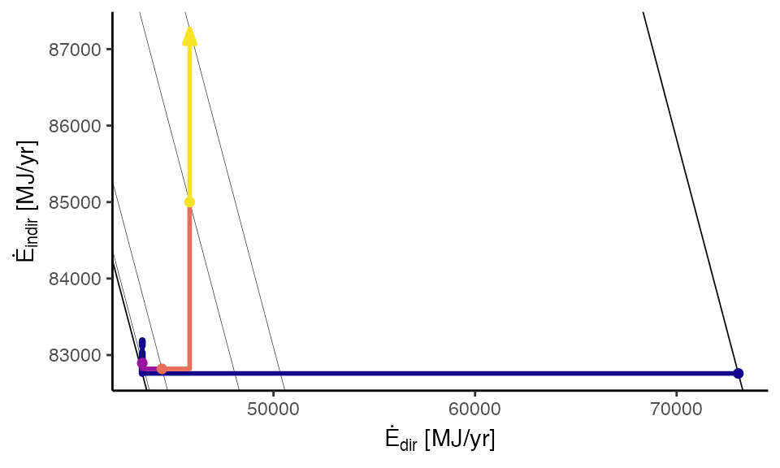
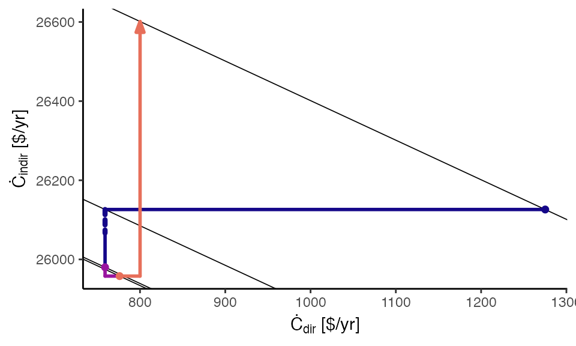
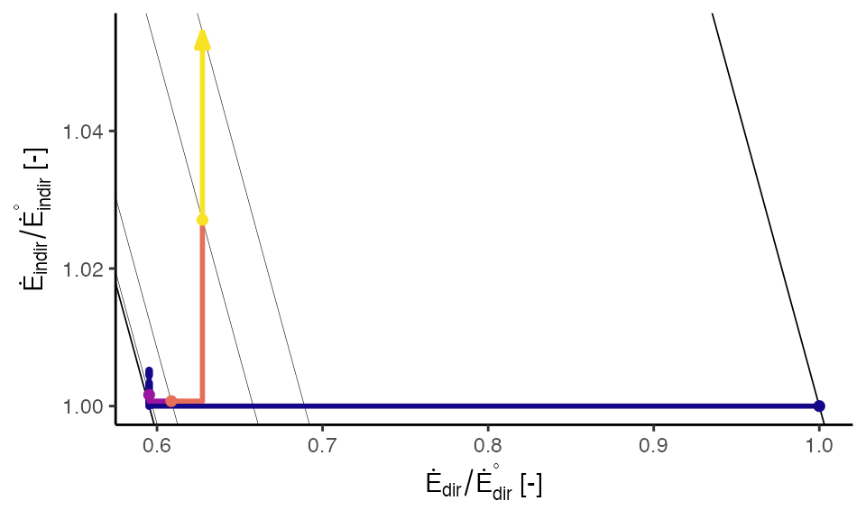
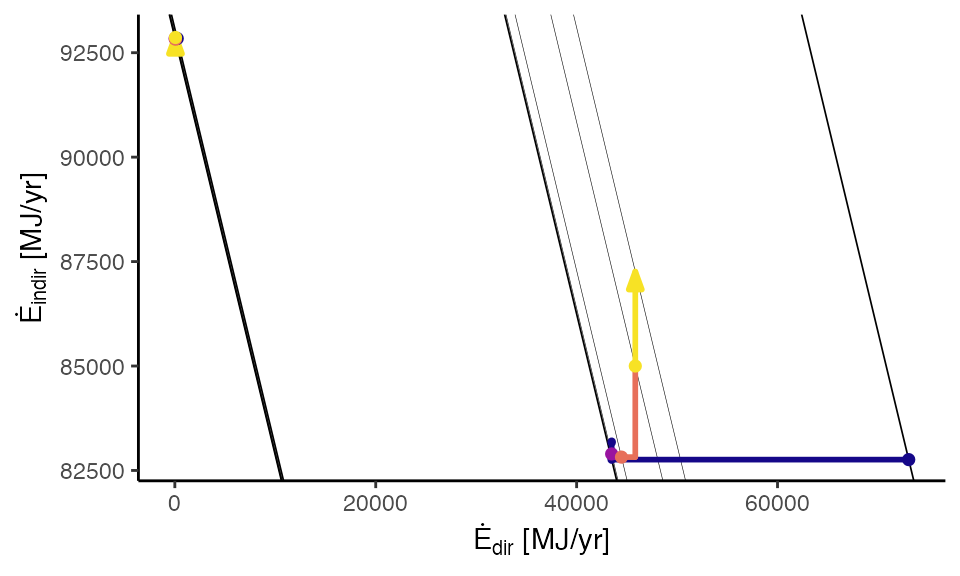
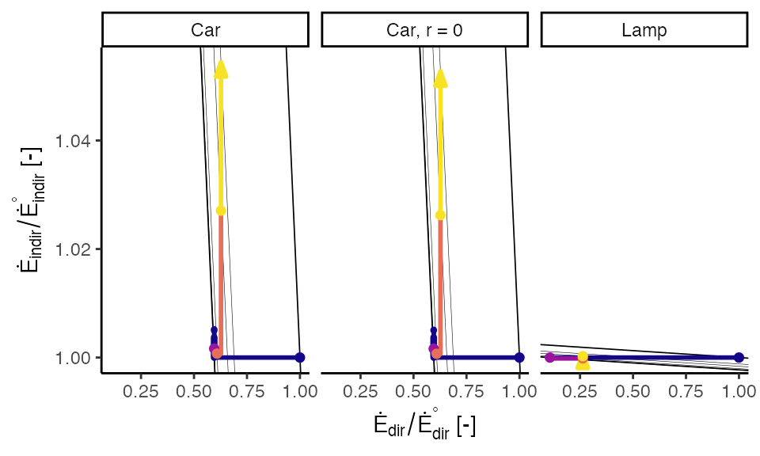
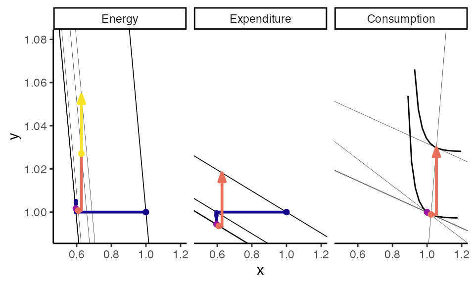
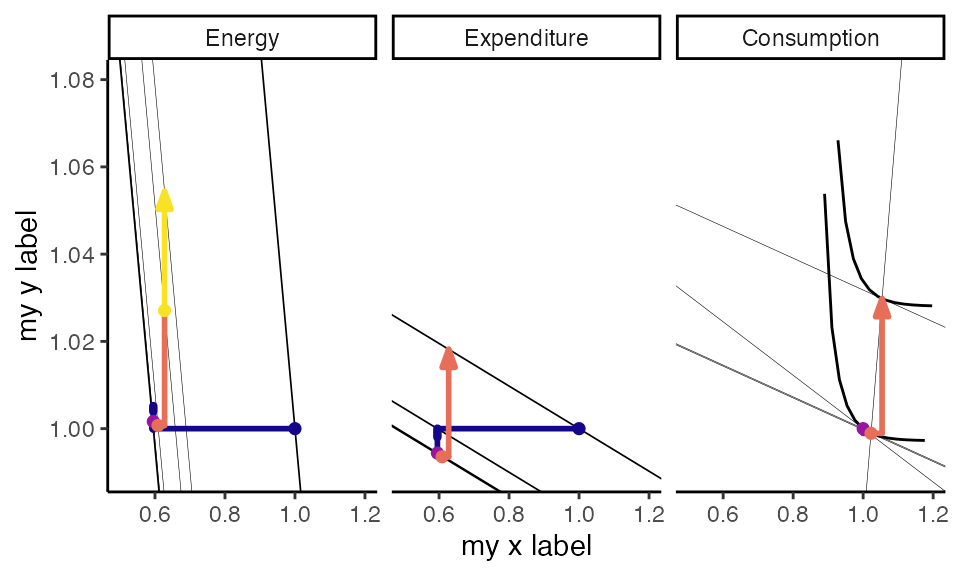
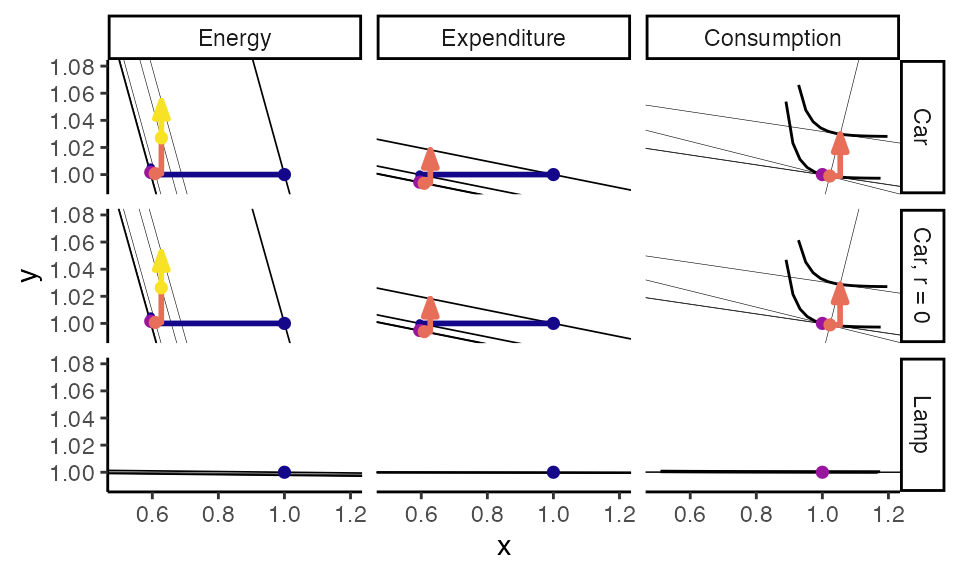
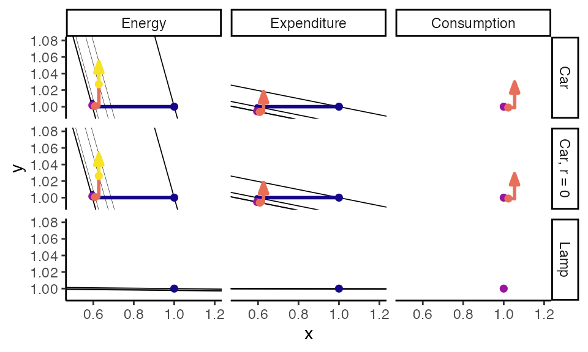
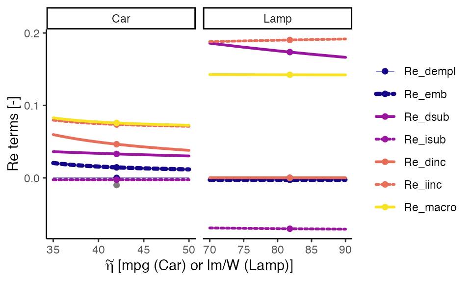

Graphs.RmdReboundTools is an R package that provides functions to analyze energy rebound,
the unanticipated reduction of the benefits of energy efficiency due to behavior change and economy-wide effects. Many functions (described in the ReboundTools vignette) perform analysis calculations to move from known parameters to rebound estimates. Graphing functions create rebound path graphs in energy, expenditure, and preference spaces. Other graphing functions create sensitivity graphs. The functions in this package were used for the analyses and graphs in the paper **********.
Rebound graphs can be created with the path_graphs() function. Three types of rebound graphs are available:
The graph_type argument to path_graphs() controls which type of path graph is returned (one of “Energy”, “Expenditure”, or “Preferences”). By default, all three graph types are returned. The cases argument determines which cases are plotted. By default, all cases are returned.
An energy path graph shows the energy effects of the energy efficiency upgrade, with direct energy consumption on the horizontal axis and indirect energy consumption on the vertical axis. Diagonal lines with negative slope indicate lines of constant energy consumption. The thicker lines show 0 % rebound (lower left) and 100 % rebound (upper right). Thinner lines show rebound after each effect in order from the 0 % line to the 100 % line: emplacement, substitution, income, and macro. The following example illustrates an energy path graph.
load_eeu_data() %>%
rebound_analysis() %>%
path_graphs(cases = "Car", graph_types = "Energy") +
ggplot2::theme_classic()
The expenditure path graph shows expenditures for rebound effects. Direct expenditures for the energy service (including substitution and income takebacks) are shown in the horizontal axis; capital expenditures, maintenance and disposal expenditures, substitution effect savings, and income effect expenditures are shown in the vertical axis. Diagonal lines with negative slope indicate lines of constant expenditure. The lower-left line indicates expected expenditure options before capital expenditure changes, maintenance expenditure changes, or behavior changes. Note that the beginning (dot) and end (arrow) of the expenditure path both lie on the same expenditure line, indicating that all freed cash (after the emplacement and substitution effects) is re-spent in the income effect.
load_eeu_data() %>%
rebound_analysis() %>%
path_graphs(cases = "Car", graph_types = "Expenditure") +
ggplot2::theme_classic()
The preferences path graph shows details of the substitution and income effects, with normalized energy service consumption on the horizontal axis and normalized expenditures on other goods on the vertical axis. Diagonal grid lines with negative slope indicate constant expenditure sum of the energy service (horizontal axis) and other goods (vertical axis). Negative-sloping lines show the tradeoff between consumption of the energy service (horizontal axis) and consumption of other goods (vertical axis). The swooping, concave-upward grid lines indicate lines of constant utility: indifference curves.
load_eeu_data() %>%
rebound_analysis() %>%
path_graphs(cases = "Car", graph_types = "Preferences") +
ggplot2::xlim(0.995, 1.06) +
ggplot2::ylim(0.995, 1.04) +
ggplot2::theme_classic()path_graphs()
In addition to the graph_types and cases arguments, the following arguments adjust the composition and appearance of graphs:
indexed,graph_types,grid_types, andgraph_params.indexed
Setting indexed = TRUE normalizes the rebound data to conditions before emplacement of the energy efficient device, such that the starting point is always (1, 1).
load_eeu_data() %>%
rebound_analysis() %>%
path_graphs(indexed = TRUE, cases = "Car", graph_types = "Energy") +
ggplot2::theme_classic()
As discussed above, the cases argument tells which Cases should be plotted. All cases are plotted by default, although the result is rarely pleasing.
load_eeu_data() %>%
rebound_analysis() %>%
path_graphs(cases = c("Car", "Lamp"),
graph_types = "Energy") +
ggplot2::theme_classic()
When the cases are overlapping or very different (as above), faceting and indexing may improve the appearance of the graph.
load_eeu_data() %>%
rebound_analysis() %>%
path_graphs(indexed = TRUE,
graph_types = ReboundTools::graph_types$energy) +
ggplot2::facet_wrap(facets = ReboundTools::eeu_base_params$case) +
ggplot2::theme_classic()
graph_types
The graph_types argument tells which type of graph should be created. The default ReboundTools::graph_types returns all three graph types. Again, faceting and indexing may be beneficial.
load_eeu_data() %>%
rebound_analysis() %>%
path_graphs(indexed = TRUE, cases = "Car") +
ggplot2::facet_wrap(facets = ReboundTools::graph_df_colnames$graph_type_col) +
ggplot2::xlim(0.5, 1.2) +
ggplot2::ylim(0.99, 1.08) +
ggplot2::theme_classic()
#> Warning: Removed 280 row(s) containing missing values (geom_path).
Note that the path_graphs() function applies labels to the x and y axes whenever the labels are unambiguous. However, when multiple path graphs are included in the same figure, the x and y axis labels are unclear. The user can apply labels appropriate to their situation.
load_eeu_data() %>%
rebound_analysis() %>%
path_graphs(indexed = TRUE, cases = "Car") +
ggplot2::facet_wrap(facets = ReboundTools::graph_df_colnames$graph_type_col) +
ggplot2::xlim(0.5, 1.2) +
ggplot2::ylim(0.99, 1.08) +
ggplot2::xlab("my x label") +
ggplot2::ylab("my y label") +
ggplot2::theme_classic()
#> Warning: Removed 280 row(s) containing missing values (geom_path).
load_eeu_data() %>%
rebound_analysis() %>%
path_graphs(indexed = TRUE) +
ggplot2::facet_grid(rows = vars(Case),
cols = vars(graph_type),
scales = "free") +
ggplot2::xlim(0.5, 1.2) +
ggplot2::ylim(0.99, 1.08) +
ggplot2::theme_classic()
#> Warning: Removed 334 row(s) containing missing values (geom_path).
#> Warning: Removed 15 rows containing missing values (geom_segment).
#> Warning: Removed 3 rows containing missing values (geom_segment).
#> Warning: Removed 6 rows containing missing values (geom_point).
grid_types
The grid_types argument tells which grids to include on the rebound graphs. By default, grids are provided for all graph types. In the example below, grids are provided only for the energy and expenditure path graphs.
load_eeu_data() %>%
rebound_analysis() %>%
path_graphs(indexed = TRUE, grid_types = c("Energy", "Expenditure")) +
ggplot2::facet_grid(rows = vars(Case),
cols = vars(graph_type),
scales = "free") +
ggplot2::xlim(0.5, 1.2) +
ggplot2::ylim(0.99, 1.08) +
ggplot2::theme_classic()
#> Warning: Removed 15 rows containing missing values (geom_segment).
#> Warning: Removed 3 rows containing missing values (geom_segment).
#> Warning: Removed 6 rows containing missing values (geom_point).
graph_params
While indexed controls how the data are quantified and graph_types and grid_types control what data are shown, graph_params controls the appearance of rebound graphs. graph_params should be a named list. The default graph_params list is path_graph_params.
ReboundTools::path_graph_params
#> $which_points
#> # A tibble: 5 x 2
#> point_name start_point
#> <chr> <lgl>
#> 1 orig TRUE
#> 2 star TRUE
#> 3 hat TRUE
#> 4 bar TRUE
#> 5 tilde FALSE
#>
#> $last_point
#> [1] FALSE
#>
#> $point_shape
#> [1] 19
#>
#> $point_size
#> [1] 1
#>
#> $point_stroke
#> [1] 1
#>
#> $which_arrows
#> # A tibble: 9 x 2
#> line_name end_arrow
#> <chr> <lgl>
#> 1 dempl FALSE
#> 2 emb FALSE
#> 3 cap FALSE
#> 4 md FALSE
#> 5 isub FALSE
#> 6 dsub FALSE
#> 7 dinc FALSE
#> 8 iinc FALSE
#> 9 macro FALSE
#>
#> $last_arrow
#> [1] TRUE
#>
#> $arrow_style
#> $angle
#> [1] 20
#>
#> $length
#> [1] 0.1inches
#>
#> $ends
#> [1] 2
#>
#> $type
#> [1] 2
#>
#> attr(,"class")
#> [1] "arrow"
#>
#> $show_indifference_curves
#> [1] TRUE
#>
#> $dempl_colour
#> [1] "#150789FF"
#>
#> $emb_colour
#> [1] "#150789FF"
#>
#> $cap_colour
#> [1] "#150789FF"
#>
#> $md_colour
#> [1] "#150789FF"
#>
#> $empl_colour
#> [1] "#150789FF"
#>
#> $isub_colour
#> [1] "#99149FFF"
#>
#> $dsub_colour
#> [1] "#99149FFF"
#>
#> $sub_colour
#> [1] "#99149FFF"
#>
#> $dinc_colour
#> [1] "#E76F5AFF"
#>
#> $iinc_colour
#> [1] "#E76F5AFF"
#>
#> $inc_colour
#> [1] "#E76F5AFF"
#>
#> $macro_colour
#> [1] "#F7E225FF"
#>
#> $dir_colour
#> [1] "black"
#>
#> $indir_colour
#> [1] "black"
#>
#> $tot_colour
#> [1] "black"
#>
#> $dempl_size
#> [1] 1
#>
#> $emb_size
#> [1] 1.5
#>
#> $cap_size
#> [1] 1.5
#>
#> $md_size
#> [1] 1
#>
#> $empl_size
#> [1] 1
#>
#> $isub_size
#> [1] 1
#>
#> $dsub_size
#> [1] 1
#>
#> $sub_size
#> [1] 1
#>
#> $dinc_size
#> [1] 1
#>
#> $iinc_size
#> [1] 1
#>
#> $inc_size
#> [1] 1
#>
#> $macro_size
#> [1] 1
#>
#> $dir_size
#> [1] 1
#>
#> $indir_size
#> [1] 1
#>
#> $tot_size
#> [1] 2
#>
#> $dempl_linetype
#> [1] "solid"
#>
#> $emb_linetype
#> [1] "11"
#>
#> $cap_linetype
#> [1] "11"
#>
#> $md_linetype
#> [1] "solid"
#>
#> $empl_linetype
#> [1] "solid"
#>
#> $dsub_linetype
#> [1] "solid"
#>
#> $isub_linetype
#> [1] "solid"
#>
#> $sub_linetype
#> [1] "solid"
#>
#> $dinc_linetype
#> [1] "solid"
#>
#> $iinc_linetype
#> [1] "solid"
#>
#> $sinc_linetype
#> [1] "solid"
#>
#> $macro_linetype
#> [1] "solid"
#>
#> $dir_linetype
#> [1] "solid"
#>
#> $indir_linetype
#> [1] "solid"
#>
#> $tot_linetype
#> [1] "solid"
#>
#> $lineend
#> [1] "round"
#>
#> $linejoin
#> [1] "round"
#>
#> $reverse_path_drawing_order
#> [1] FALSE
#>
#> $points_atop_paths
#> [1] TRUE
#>
#> $energy_grid_colour
#> [1] "black"
#>
#> $zero_perc_rebound_grid_colour
#> [1] "black"
#>
#> $hundred_perc_rebound_grid_colour
#> [1] "black"
#>
#> $energy_rebound_lines_colour
#> [1] "black"
#>
#> $expenditure_grid_colour
#> [1] "black"
#>
#> $prefs_grid_colour
#> [1] "black"
#>
#> $prefs_ray_colour
#> [1] "black"
#>
#> $prefs_indiff_grid_colour
#> [1] "black"
#>
#> $energy_grid_size
#> [1] 0.1
#>
#> $zero_perc_rebound_grid_size
#> [1] 0.3
#>
#> $hundred_perc_rebound_grid_size
#> [1] 0.3
#>
#> $energy_rebound_lines_size
#> [1] 0.1
#>
#> $expenditure_grid_size
#> [1] 0.3
#>
#> $prefs_grid_size
#> [1] 0.1
#>
#> $prefs_ray_size
#> [1] 0.1
#>
#> $prefs_indiff_grid_size
#> [1] 0.5
#>
#> $energy_grid_linetype
#> [1] "solid"
#>
#> $zero_perc_rebound_grid_linetype
#> [1] "solid"
#>
#> $hundred_perc_rebound_grid_linetype
#> [1] "solid"
#>
#> $energy_rebound_lines_linetype
#> [1] "solid"
#>
#> $expenditure_grid_linetype
#> [1] "solid"
#>
#> $prefs_grid_linetype
#> [1] "solid"
#>
#> $prefs_ray_linetype
#> [1] "solid"
#>
#> $prefs_indiff_grid_linetype
#> [1] "solid"
#>
#> $n_indiff_curve_points
#> [1] 200
#>
#> $qs_qs0_lower
#> [1] 0.1
#>
#> $qs_qs0_upper
#> [1] 10Most parameters are self-explanatory. For example, ReboundTools::path_graph_params$dempl_colour sets the colour of the direct emplacement path.
my_graph_params <- path_graph_params
my_graph_params$dempl_colour <- "darkred"
load_eeu_data() %>%
rebound_analysis() %>%
path_graphs(indexed = TRUE,
graph_types = ReboundTools::graph_types$energy,
graph_params = my_graph_params) +
ggplot2::facet_wrap(facets = ReboundTools::eeu_base_params$case) +
ggplot2::theme_classic()See help for path_graph_params for additional information.
Sensitivity graphs can be created by the sensitivity_graphs() function. A named list of sensitivity parameters is required. These graphs are easiest described via examples.
The first example shows the sensitivity of total rebound (\(Re_{tot}\)) to the macro parameter (\(k\)).
df <- load_eeu_data()
sens_params <- list(Car = list(k = seq(0.5, 1.5, by = 0.5)),
Lamp = list(k = seq(0, 2, by = 1)))
sensitivity_graphs(rebound_data = df, parameterization = sens_params,
x_var = "k", y_var = "Re_tot") +
ggplot2::facet_wrap(facets = "Case", scales = "free_x") +
ggplot2::scale_colour_manual(values = c(Re_tot = "black"), guide = FALSE) +
ggplot2::scale_size_manual(values = c(Re_tot = 0.5), guide = FALSE) +
ggplot2::scale_linetype_manual(values = c(Re_tot = "solid"), guide = FALSE) +
ggplot2::labs(y = expression(Re[tot]),
colour = ggplot2::element_blank(),
size = ggplot2::element_blank(),
linetype = ggplot2::element_blank()) +
ggplot2::theme_classic()The next example shows multi-variate sensitivity. Values of the macro parameter (\(k\)) are shown in rows of the lattice plot. Uncompensated price elasticity of energy service consumption (\(\epsilon_{\dot{q}_s,p_s}\)) is shown in columns of the lattice plot. Total rebound (\(Re_{tot}\)) is given on the \(y\)-axis, and energy intensity of the economy (\(I_E\)) is given on the \(x\)-axis. The cases (Car and Lamp) are shown as different lines.
sens_params_2 <- list(Car = list(k = seq(0, 2, by = 0.5),
I_E = seq(2, 5, by = 1),
e_qs_ps_UC = seq(-0.5, -0.1, by = 0.1)),
Lamp = list(k = seq(0, 2, by = 0.5),
I_E = seq(2, 5, by = 1),
e_qs_ps_UC = seq(-0.5, -0.1, by = 0.1)))
# Choose which rebound variables to include and their order.
sensitivity_graphs(rebound_data = df, parameterization = sens_params_2,
x_var = "I_E",
y_var = "Re_tot",
line_var = "Case") +
ggplot2::facet_grid(rows = ggplot2::vars(k),
cols = ggplot2::vars(e_qs_ps_UC), scales = "free_y") +
ggplot2::scale_colour_manual(values = c(Car = "black", Lamp = "red")) +
ggplot2::scale_size_manual(values = c(Car = 0.5, Lamp = 1.0)) +
ggplot2::scale_linetype_manual(values = c(Car = "solid", Lamp = "dashed")) +
ggplot2::labs(colour = ggplot2::element_blank(),
size = ggplot2::element_blank(),
linetype = ggplot2::element_blank()) +
ggplot2::theme_classic()A third sensitivity example shows
sens_params_3 <- list(Car = list(eta_engr_units_star = seq(35, 50, by = 0.5)),
Lamp = list(eta_engr_units_star = seq(70, 90, by = 5)))
# Choose rebound terms to include in the graph and their order
rebound_vars <- c("Re_dempl", "Re_emb", "Re_md", "Re_dsub", "Re_isub",
"Re_dinc", "Re_iinc", "Re_macro")
sensitivity_graphs(rebound_data = df, parameterization = sens_params_3,
x_var = "eta_engr_units_tilde",
y_var = rebound_vars) +
ggplot2::facet_wrap(facets = "Case", scales = "free_x") +
ggplot2::scale_colour_manual(values =
c(Re_dempl = ReboundTools::path_graph_params$dempl_colour,
Re_emb = ReboundTools::path_graph_params$emb_colour,
Re_md = ReboundTools::path_graph_params$md_colour,
Re_dsub = ReboundTools::path_graph_params$dsub_colour,
Re_isub = ReboundTools::path_graph_params$isub_colour,
Re_dinc = ReboundTools::path_graph_params$dinc_colour,
Re_iinc = ReboundTools::path_graph_params$iinc_colour,
Re_macro = ReboundTools::path_graph_params$macro_colour),
breaks = rebound_vars) +
ggplot2::scale_size_manual(values =
c(Re_dempl = 0.2,
Re_emb = ReboundTools::path_graph_params$emb_size,
Re_md = ReboundTools::path_graph_params$md_size,
Re_dsub = ReboundTools::path_graph_params$dsub_size,
Re_isub = ReboundTools::path_graph_params$isub_size,
Re_dinc = ReboundTools::path_graph_params$dinc_size,
Re_iinc = ReboundTools::path_graph_params$iinc_size,
Re_macro = ReboundTools::path_graph_params$macro_size),
breaks = rebound_vars) +
ggplot2::scale_linetype_manual(values =
c(Re_dempl = ReboundTools::path_graph_params$dempl_linetype,
Re_emb = ReboundTools::path_graph_params$emb_linetype,
Re_md = ReboundTools::path_graph_params$md_linetype,
Re_dsub = ReboundTools::path_graph_params$dsub_linetype,
Re_isub = "11",
Re_dinc = ReboundTools::path_graph_params$dinc_linetype,
Re_iinc = "11",
Re_macro = ReboundTools::path_graph_params$macro_linetype),
breaks = rebound_vars) +
ggplot2::labs(x = expression(tilde(eta)*" [mpg (Car) or lm/W (Lamp)]"),
y = "Re terms [-]",
colour = ggplot2::element_blank(),
size = ggplot2::element_blank(),
linetype = ggplot2::element_blank()) +
ggplot2::theme_classic()
The ReboundTools package assists with analyzing rebound effects and displaying the results. In particular,
path_graphs() function returns ggplot2 objects that show rebound path graphs andsensitivity_graphs() function returns ggplot2 objects that show sensitivity analyses.Taken together, these functions provide important capabilities to analyze rebound effects for energy efficiency upgrades.